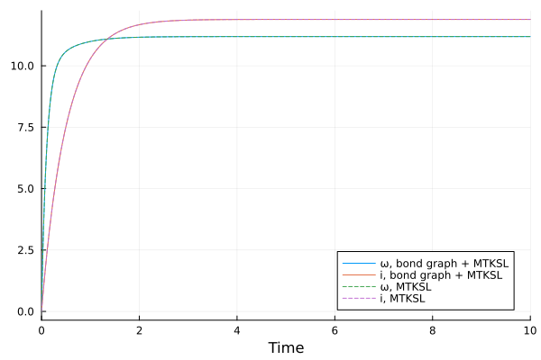
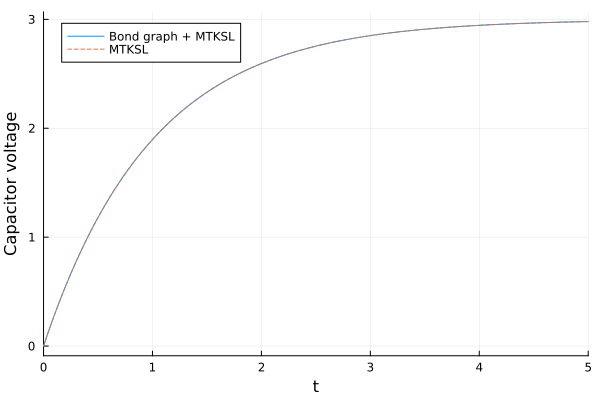
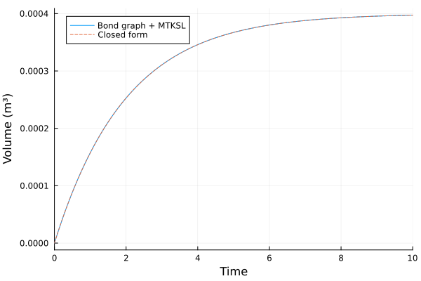

Coupling with the MTK Standard Library
The source files for all examples can be found in /examples.
ModelingToolkitStandardLibrary (MTKSL) models use their own connectors: pins, flanges, hydraulic ports. A bond graph can't connect to them directly, because their variables are not an effort and a flow. An adapter is a one-port bond-graph element whose other side is an MTKSL connector, so the MTKSL network behind it acts as the element at the end of the bond:
| Adapter | MTKSL connector(s) | Effort | Flow |
|---|---|---|---|
ElectricalAdapter | p, n (Pin) | voltage p.v - n.v | current into the network at p (power), out of it (pout) |
TranslationalAdapter | flange (MechanicalPort) | force on the network | flange.v (power), -flange.v (pout) |
TranslationalPositionAdapter | flange (TranslationalPosition.Flange) | force on the network | ds/dt (power), -ds/dt (pout) |
RotationalAdapter | flange (Rotational.Flange) | torque on the network | dφ/dt (power), -dφ/dt (pout) |
HydraulicAdapter | port (HydraulicPort) | pressure | volume flow into the network (power), out of it (pout) |
Like any element, an adapter has two ports. Bond it through power (a bare member adapter at a junction) when the MTKSL network absorbs power, and through pout (adapter => :pout, or connect(adapter.pout, …)) when it supplies it, like a source. Unlike a resistor drawn backwards, an adapter is a coupling, not a law: either port conserves power, and the choice only sets which way the bond's flow is counted. The effort stays the one across (or on) the network.
using BondGraphToolkit
using BondGraphToolkit.ModelingToolkit: t_nounits as t
import ModelingToolkitStandardLibrary.Electrical as El
import ModelingToolkitStandardLibrary.Mechanical.Rotational as Rot
import ModelingToolkitStandardLibrary.Mechanical.Translational as Tr
import ModelingToolkitStandardLibrary.Mechanical.TranslationalPosition as TP
import ModelingToolkitStandardLibrary.Hydraulic.IsothermalCompressible as Hy
import ModelingToolkitStandardLibrary.Blocks as Blocks
using OrdinaryDiffEqRosenbrock
using PlotsA bond-graph motor driving an MTKSL load
The DC motor with its rotor inertia and friction moved to MTKSL: the mechanical 1-junction bonds into a RotationalAdapter, whose flange drives an MTKSL Inertia and Damper. The adapter integrates the shaft speed into the flange angle, so it takes the initial angle phi.
@named L = Inertia(I = 0.5)
@named R = Resistance(R = 1.0)
@named V = Se(12.0)
@named τ = Se(1.0)
@named shaft = RotationalAdapter(phi = 0.0)
@named je = Junction1(V => :pout, R, L, :gy)
@named jm = Junction1(τ => :pout, :gy => :in, shaft)
@named gy = GY(r = 0.01)
@named inertia = Rot.Inertia(J = 0.01, w = 0.0)
@named damper = Rot.Damper(d = 0.1)
@named fixed = Rot.Fixed()
@named motor = System([connect(je.gy, gy.p1), connect(gy.p2, jm.gy),
connect(jm.shaft.flange, inertia.flange_a), connect(inertia.flange_b, damper.flange_b),
connect(damper.flange_a, fixed.flange)], t;
systems = [je, gy, jm, inertia, damper, fixed])
sol = solve(ODEProblem(mtkcompile(motor), [], (0.0, 10.0)), Rodas5P(), reltol = 1e-10, abstol = 1e-10);As a reference, the same motor written entirely in MTKSL: a voltage source, resistor and inductor drive an EMF, which couples them like the gyrator (torque k i, back EMF k ω), whose flange turns the same inertia and damper, with a constant applied torque. The EMF integrates the shaft speed into an angle, so here the rotor takes its initial angle phi.
@named vk = Blocks.Constant(k = 12.0)
@named src = El.Voltage()
@named res = El.Resistor(R = 1.0)
@named ind = El.Inductor(L = 0.5, i = 0.0)
@named emf = El.EMF(k = 0.01)
@named rotor = Rot.Inertia(J = 0.01, phi = 0.0, w = 0.0)
@named gnd = El.Ground()
@named τk = Blocks.Constant(k = 1.0)
@named torque = Rot.Torque()
@named ref = System([connect(vk.output, src.V), connect(src.p, res.p), connect(res.n, ind.p),
connect(ind.n, emf.p), connect(emf.n, src.n, gnd.g),
connect(τk.output, torque.tau), connect(emf.flange, rotor.flange_a, torque.flange),
connect(rotor.flange_b, damper.flange_b), connect(damper.flange_a, emf.support, fixed.flange)], t;
systems = [vk, src, res, ind, emf, gnd, τk, torque, rotor, damper, fixed])
sol_ref = solve(ODEProblem(mtkcompile(ref), [], (0.0, 10.0)), Rodas5P(), reltol = 1e-10, abstol = 1e-10)
plot(sol, idxs = [inertia.w, je.L.f], label = ["ω, bond graph + MTKSL" "i, bond graph + MTKSL"])
plot!(sol_ref, idxs = [rotor.w, ind.i], linestyle = :dash, label = ["ω, MTKSL" "i, MTKSL"], xlabel = "Time")
The largest difference on a common time grid, in angular velocity and in current:
tgrid = 0:0.01:10
(maximum(abs, sol(tgrid; idxs = inertia.w).u - sol_ref(tgrid; idxs = rotor.w).u),
maximum(abs, sol(tgrid; idxs = je.L.f).u - sol_ref(tgrid; idxs = ind.i).u))(2.0888180074507545e-11, 1.6676260372605611e-10)An MTKSL circuit behind a bond graph source
Here a bond-graph source drives an MTKSL resistor and capacitor in series through an ElectricalAdapter; the network's lower terminal is grounded.
@named se = Se(3.0)
@named ea = ElectricalAdapter()
@named j = Junction1(se => :pout, ea)
@named res = El.Resistor(R = 2.0)
@named cap = El.Capacitor(C = 0.5, v = 0.0)
@named gnd = El.Ground()
@named circuit = System([connect(j.ea.p, res.p), connect(res.n, cap.p), connect(cap.n, j.ea.n, gnd.g)], t;
systems = [j, res, cap, gnd])
sol = solve(ODEProblem(mtkcompile(circuit), [], (0.0, 5.0)), Rodas5P(), reltol = 1e-10, abstol = 1e-10)retcode: Success
Interpolation: specialized 4th (Rodas6P = 5th) order "free" stiffness-aware interpolation
t: 88-element Vector{Float64}:
0.0
9.999999999999999e-5
0.0006521654260483432
0.0031193195585642796
0.011388580648245251
0.02371744487690075
0.03810919713942844
0.05584130236326063
0.0760101404200865
0.09889821424841051
⋮
4.248860369731961
4.347267558686086
4.447542681949054
4.5497536848836555
4.653972418649976
4.760274900335286
4.868741622425434
4.9794579322467065
5.0
u: 88-element Vector{Vector{Float64}}:
[0.0]
[0.00029998500049998776]
[0.001955858437197447]
[0.009343378607833724]
[0.03397192874113076]
[0.07031519021239206]
[0.11217653660563136]
[0.1629323921279722]
[0.21957957509593387]
[0.2824952867463275]
⋮
[2.9571585026153584]
[2.961173616254796]
[2.9648780993615493]
[2.968290577299849]
[2.97142891624026]
[2.974310234903019]
[2.976950917929634]
[2.9793666306739244]
[2.979786159002436]The reference is the same circuit with an MTKSL voltage source in place of the bond-graph source and adapter:
@named vk = Blocks.Constant(k = 3.0)
@named src = El.Voltage()
@named ref = System([connect(vk.output, src.V), connect(src.p, res.p), connect(res.n, cap.p),
connect(cap.n, src.n, gnd.g)], t; systems = [vk, src, res, cap, gnd])
sol_ref = solve(ODEProblem(mtkcompile(ref), [], (0.0, 5.0)), Rodas5P(), reltol = 1e-10, abstol = 1e-10)
plot(sol, idxs = [cap.v], label = "Bond graph + MTKSL", xlabel = "Time", ylabel = "Capacitor voltage")
plot!(sol_ref, idxs = [cap.v], linestyle = :dash, label = "MTKSL")
The largest difference on a common time grid:
tgrid = 0:0.01:5
maximum(abs, sol(tgrid; idxs = cap.v).u - sol_ref(tgrid; idxs = cap.v).u)0.0Translational: a force on an MTKSL mass
A bond-graph force pushes a 2 kg MTKSL mass, first velocity-based (Translational), then position-based (TranslationalPosition). By Newton's 2nd law, a 1 N force accelerates the mass from rest as v = t/2, and both models are checked against it. The velocity-based mass needs its own initial position and velocity:
@named F = Se(1.0)
@named ta = TranslationalAdapter()
@named j = Junction1(F => :pout, ta)
@named mass = Tr.Mass(m = 2.0)
@named push = System([connect(j.ta.flange, mass.flange)], t; systems = [j, mass])
sys = mtkcompile(push)
sol = solve(ODEProblem(sys, [sys.mass.v => 0.0, sys.mass.s => 0.0], (0.0, 2.0)), Rodas5P(),
reltol = 1e-10, abstol = 1e-10)
tgrid = 0:0.01:2
maximum(abs, sol(tgrid; idxs = mass.v).u - tgrid / 2)1.0103029524088925e-14@named F = Se(1.0)
@named tpa = TranslationalPositionAdapter()
@named j = Junction1(F => :pout, tpa)
@named mass = TP.Mass(m = 2.0, s = 0.0, v = 0.0)
@named push = System([connect(j.tpa.flange, mass.flange)], t; systems = [j, mass])
sol = solve(ODEProblem(mtkcompile(push), [], (0.0, 2.0)), Rodas5P(), reltol = 1e-10, abstol = 1e-10)
maximum(abs, sol(tgrid; idxs = mass.v).u - tgrid / 2)1.099120794378905e-14Hydraulic: an MTKSL pressure source filling a bond-graph tank
Here the MTKSL side supplies power: a pressure source drives a flow through a bond-graph resistance into a compliance (a tank). The adapter is bonded like a source, through pout, so the bond's flow is the volume flow out of the MTKSL network, into the tank.
@named k = Blocks.Constant(k = 2.0e5)
@named src = Hy.Pressure()
@named fluid = Hy.HydraulicFluid()
@named ha = HydraulicAdapter()
@named R = Resistance(R = 1.0e9)
@named C = Compliance(C = 2.0e-9)
@named j = Junction1(ha => :pout, R, C)
@named tank = System([connect(k.output, src.p), connect(fluid, src.port), connect(src.port, j.ha.port)], t;
systems = [k, src, fluid, j])
sol = solve(ODEProblem(mtkcompile(tank), [], (0.0, 10.0)), Rodas5P(); abstol = 1e-18, reltol = 1e-10)retcode: Success
Interpolation: specialized 4th (Rodas6P = 5th) order "free" stiffness-aware interpolation
t: 101-element Vector{Float64}:
0.0
9.999999999999999e-5
0.0002892195283450132
0.0007386640278101097
0.0016790938218369513
0.0035464479318265047
0.006897144277087862
0.012577399810638937
0.022811254327718543
0.03598002637381932
⋮
8.579773480017682
8.767493951936192
8.95863078960307
9.15330212590529
9.351632562213226
9.553753687471673
9.759804548964055
9.969932135768747
10.0
u: 101-element Vector{Vector{Float64}}:
[0.0]
[1.9999500008333256e-8]
[5.783972347382195e-8]
[1.4770552769302332e-7]
[3.3567783600568114e-7]
[7.086610932598786e-7]
[1.3770530572803882e-6]
[2.5075869670542874e-6]
[4.536331833869585e-6]
[7.1316635736263e-6]
⋮
[0.00039451740895797734]
[0.0003950085943117489]
[0.000395463530110079]
[0.0003958842812523503]
[0.00039627283360246215]
[0.0003966310952101102]
[0.0003969608974055755]
[0.0003972639959521549]
[0.00039730482120033583]By hand: the adapter's bond points into the 1-junction and the other two out of it, so its efforts sum to $0 = p_0 - R\,\dot{q} - q/C$, and from an empty tank
\[q(t) = C\,p_0\,\left(1 - e^{-t/RC}\right),\]
which approaches $C\,p_0 = 4 \times 10^{-4}$ m³ with the time constant $RC = 2$ s. Bonded through power instead (Junction1(ha, R, C)), the same model gives $-q(t)$: the bond's flow is then counted into the network, and is negative while the source delivers.
q_tank(τ) = 2.0e-9 * 2.0e5 * (1 - exp(-τ / (1.0e9 * 2.0e-9)))
plot(sol, idxs = [j.C.q], label = "Bond graph + MTKSL", xlabel = "Time", ylabel = "Volume (m³)")
plot!(q_tank, 0, 10, label = "Closed form", linestyle = :dash)
The largest difference on a common time grid, relative to the final volume $C\,p_0$:
tgrid = 0:0.01:10
maximum(abs, sol(tgrid; idxs = j.C.q).u - q_tank.(tgrid)) / 4.0e-44.330710052721787e-12Notes per domain:
TranslationalPositionAdapterandRotationalAdapterintegrate the flow into a position or angle, so give their initial value (s,phi) unless the MTKSL side already sets it.HydraulicAdapter: MTKSL's through-variable is a mass flow, so the bond's flow is the volume flow at the fluid's reference density. Connect theHydraulicFluidin its own statement,connect(fluid, src.port), not in the sameconnectas the adapter. Hydraulic volumes are small (~1e-6 m³), so tightenabstolaccordingly.- A coupled model may keep algebraic equations. If a solver reports that it can't use mass matrices, switch to a DAE-capable one such as
Rodas5P, as here.
This page was generated using Literate.jl.